MATHS WEDNESDAYS · TEST SITE
Play with an idea.
Make a prediction. Try it out. Find the pattern.
Maths to explore together, on screen and at the table.
Build, notice & investigate
Start with cubes, paper or sticks. Use the screen to test an idea and compare discoveries.
Scytale · The wrapping code
Write a secret message around a rod. Unwrap the paper, zoom in and discover how the letters line up.
Wrap & investigate →Circle Investigations
Move points and explore triangles, angles, area and perspective. Nine linked investigations with hints and optional measurements.
Explore →30 Cubes
Build and rotate cuboids. Find and collect different ways to make a solid using exactly 30 cubes.
Explore →Squares to Euclid
Remove the biggest square, one at a time. Explore the remaining rectangle and discover the highest common factor.
Explore →Polyomino Studio
Discover different shapes made from squares. Rotate, flip and fit pieces into tiling challenges.
Build & investigate →The Magic Money Plant
Grow plants, harvest coins and predict your fortune. Find the starting garden that makes 427 coins.
Grow & investigate →Cut & Rearrange
Cut triangles and other shapes into pieces. Slide and turn them into rectangles and squares, with cut hints and animated examples.
Explore →Factor Shapes
Move the sliders to make rectangles and cuboids with your chosen area or volume. Collect the different shapes.
Explore →Factor Tree
Choose your own factor splits. Grow a tree, discover its primes and compare different routes to the same number.
Explore →Fewest Squares
Cover a rectangle with as few squares as possible. Draw snapping pieces, undo moves and compare your solutions.
Explore →36 Fences
Keep the fencing fixed and change the enclosure. Build rectangles or your own shapes, then investigate the area inside.
Explore →Puzzles & strategy
Painted Cube
Paint and rotate a cube. Sort its smaller cubes by how many faces are painted, and explore different sizes.
Explore →Rupert’s Cube
Slide out the yellow cut-out, then pass a blue cube through the tunnel. Rotate and inspect with two sliders.
Explore →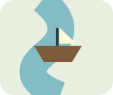
River crossing
Transport the wolf, goat and lettuce safely. Then try larger loads and more cargo. Choose every challenge from one play page.
Play →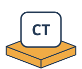
Mastermind
Choose your colours and holes. Play against a secret code, or get help with a physical game.
Explore →Find a SET
Explore 9, 27 or 81 cards. Find triples, ask for graduated hints and print a physical deck.
Explore →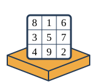
Three cards make 15
Take cards from a row into your hand. Two players or a computer opponent; a separate magic-square page reveals the connection.
Explore →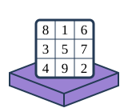
15 meets noughts & crosses
Play on the magic square: 8, 1 and 6 form a winning row. Connect all eight winning triples to lines.
Explore →Take-away strategy
Use real counters alongside the screen. Change the rules, undo moves and explore a strategy.
Explore →Tower of Hanoi
Move the discs from peg A to peg C. Can you find the fewest moves? Choose from one to eight discs.
Explore →Turing tape puzzles
Write rules for a machine. Follow its head, one step at a time.
Explore →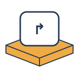
Robot trails
Build a program with turns and loops in a little block world.
Explore →Quick starters & breaks
More playable activities
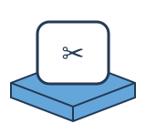
Paper surprises
Predict, make and test with paperclips, folded loops and paper beams. Keep an experiment log.
Explore →Mystery-weight boxes
Compare hidden weights, arrange the boxes and step through two sorting methods.
Explore →Dobble & the Fano plane
Build seven matching cards from seven points. Explore why each pair shares one symbol, then play solo or race a friend.
Explore →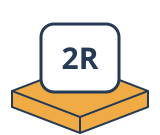
2D Rigidity Lab
Connect joints with bars. Discover why a square can flex and what a diagonal changes.
Explore →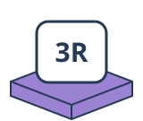
3D Rigidity Lab
Rotate a cube, tetrahedron or tower. Add bars and investigate which structures hold their shape.
Explore →Bridge Lab
Build a truss bridge, inspect tension and compression, then increase the load to test its limits.
Explore →Which card stays?
Ace to King in a circle. Keep one, remove one, predict the final card.
Explore →After the experiment: why binary?
Explore the connection only when you are ready. Move the leading bit and see why the rule works.
Explore →Spelling Bee
Make words from seven letters. Every word must include the centre letter.
Explore →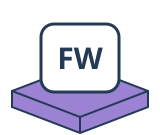
Five-letter word game
Find a secret word in six guesses. Repeated letters are scored individually.
Explore →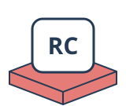
Rubik’s Cube
Explore real cube moves on an unfolded net. Scramble, turn faces and reverse your moves.
Explore →Multiply to the target
Start at 1. Take turns multiplying by 2–9. First to reach or pass the target wins.
Explore →Which poker hand wins?
Compare two hands using five shared community cards. Identify the strongest five-card combination.
Explore →Chase, escape & pursuit
Watch points chase one another, or steer an escaping point away from its pursuers.
Explore →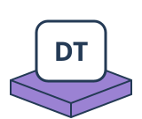
Different totals
Fill a square with −1, 0 and +1 so every row and column has a different total.
Explore →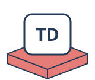
The divisor game
Take a number; give its remaining proper divisors to your opponent. Two players compete for the highest score.
Explore →Add to your neighbours
Remove an interior number and add it to both neighbours. Which order makes the biggest final total?
Explore →Secret messages
Encode, decode and crack Caesar ciphers. Explore all 26 shifts of the alphabet.
Explore →Pixel art studio
Paint one square at a time. Try mirrored patterns, undo strokes and save your artwork.
Explore →Build a robot
Choose a head, eyes, mouth and antenna. Design your own robot and save it as an SVG.
Explore →Enigma explorer
Change rotor settings and trace a letter through the machine.
Explore →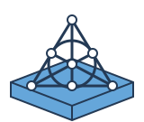
Dobble solo
Spot the match and work through the deck.
Explore →Dobble for two
A shared card, two players and a race to spot the match.
Explore →In development — try-outs
Prototypes for testing and feedback. These are not included on the student site.